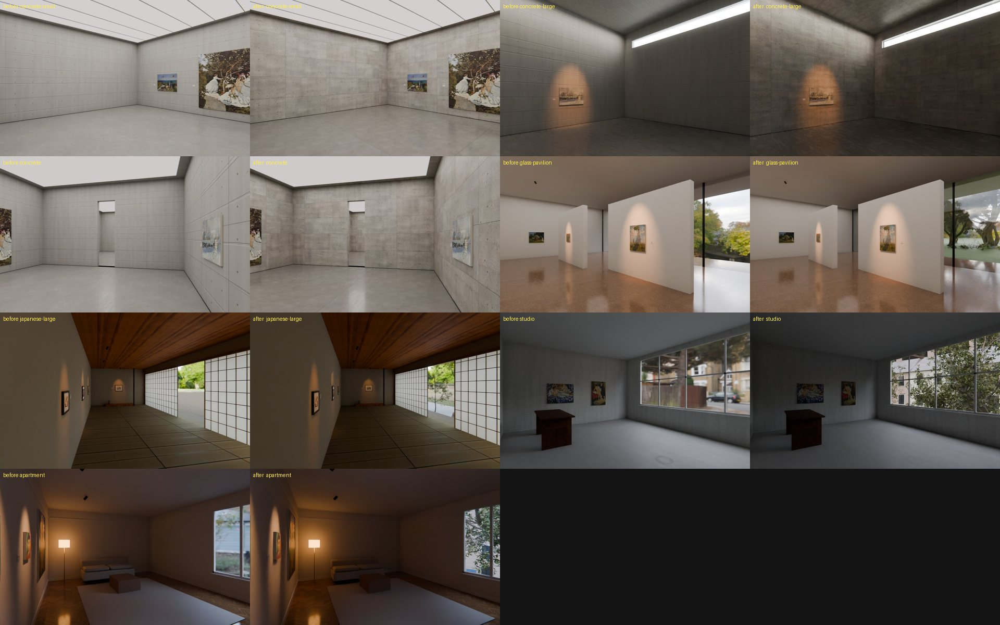
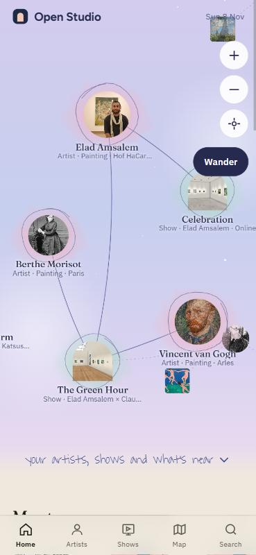
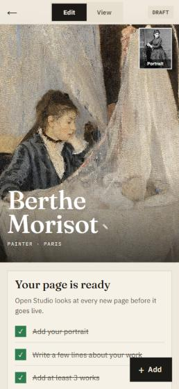

| מה | מה נעשה | פתוח |
|---|---|---|
| חללים | בטון אמיתי יותר (גוון לכל לוח, חיבורים, חורי קשירה). מאחורי החלונות עולם תלת-ממדי: דשא, עצים, חומה, בתים וערפל. הרינדור בשרת הצליח והחללים באפליקציה. | עץ בסטודיו מסתיר מדי; דשא בביתן הזכוכית עוד שטוח |
| On View | הסבר קצר למה זה חשוב. אפשר להיכנס לכל גודל חלל לפני שבוחרים. עורך תלייה בתוך החלל: גרירה, יישור, ריווח, ביטול, פודיומים לפסלים. | כמה חדרים מחוברים: עוד לא נבנה |
| הסטודיו של האמן | העמוד של האמן הוא הסטודיו, ונערך במקום. 4 כפתורים במקום 16, ורשימת "3 דברים לפני שהעמוד עולה". | לבדוק על אייפון אמיתי |
| לוח הבקרה | תור החלטות אחד, 4 לשוניות, אישור בנגיעה. 4 כיווני עיצוב ב-PDF. | לבחור כיוון; לאשר אמן אמיתי אחד |
| דף הבית | לכל כוכב תמונה ושם, זום, Wander, כרטיס בהקשה, מדף "Meet someone new". | לבדוק על אייפון אמיתי |
| אמנים | 26 אמנים חדשים (13 נשים, 13 גברים). סך הכול 36 אמנים, 26 תערוכות, 6 היסטוריות. | — |
| מוזיאון | הצעה של 14 עמודים. המלצה: מגזין שכל כתבה בו היא חדר. האוצר במחשב או באייפד, המבקר בטלפון. | לבחור כיוון |


